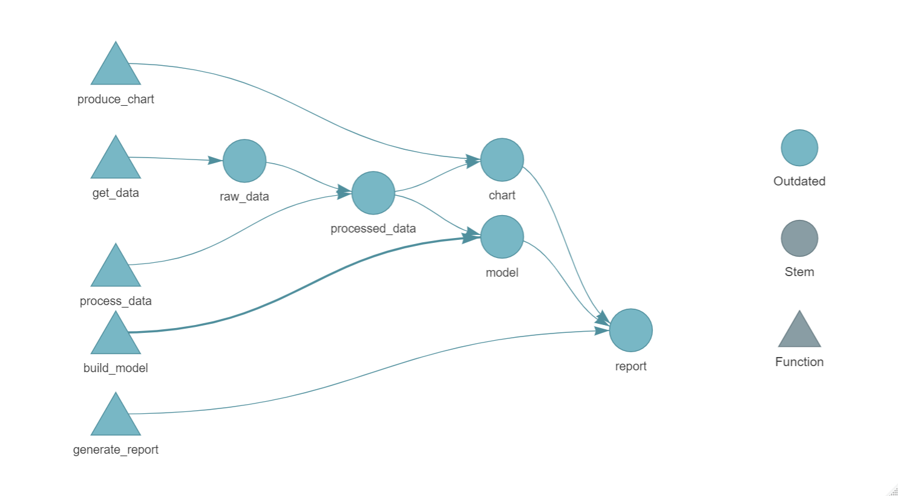
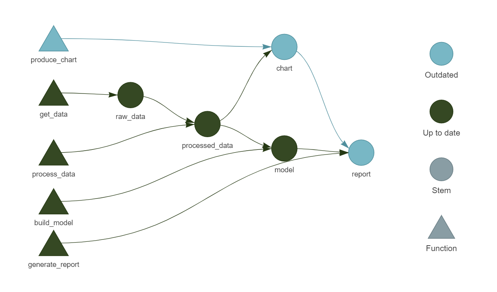

library(targets)
tar_option_set(
packages = c("tibble", "dplyr", "ggplot2"),
)
tar_source()
list(
tar_target(raw_data, get_data()),
tar_target(processed_data, process_data(raw_data)),
tar_target(chart, produce_chart(processed_data)),
tar_target(model, build_model(processed_data)),
tar_target(report, generate_report(chart, model))
)Coffee and Coding
{targets}
What is {targets}?
The targets package is a Make-like pipeline tool for Statistics and data science in R. With targets, you can maintain a reproducible workflow without repeating yourself. targets learns how your pipeline fits together, skips costly runtime for tasks that are already up to date, runs only the necessary computation, supports implicit parallel computing, abstracts files as R objects, and shows tangible evidence that the results match the underlying code and data.
. . .
Data analysis can be slow. A round of scientific computation can take several minutes, hours, or even days to complete. After it finishes, if you update your code or data, your hard-earned results may no longer be valid. Unchecked, this invalidation creates chronic Sisyphean loop:
- Launch the code.
- Wait while it runs.
- Discover an issue.
- Restart from scratch.
What is it actually trying to do?
- Your analysis is built up of a number of steps that build one on top of another
- but these steps need to run in a particular order
- some of these steps may take a long time to run
- so you only want to run the steps that have changed
Typical solution
Steps
You have a folder with numbered scripts, such as:
1. get data.R2. process data.R3. produce charts.R4. build model.R5. report.qmd
Downsides
- it’s easy to accidentally skip a step: what happens if you went from 1 to 3?
- performing one of the steps may take a long time, so you may want to skip it if it’s already been run… but how do you know that it’s already been run?
- perhaps step 4 doesn’t depend on step 3, but is this obvious that you could skip step 4 if step 3 is updated?
- what if someone labels the files terribly, or doesn’t number them at all?
- what if the numbers become out of date and are in the wrong order?
- do you need to create a procedure document that describes what to do, step-by-step?
{targets} to the rescue?
Using the previous example, if we were to create functions for each of the steps (all saved in the folder R/), we can start using targets using the function use_targets() which will create a file called _targets.R.
We can then modify the file to match our pipeline, for example:
Note that:
processed_datadepends uponraw_data,chartandmodeldepend uponprocessed_data,reportdepends uponchartandmodel.
We can visualise our pipeline using tar_visnetwork().

Running the pipeline
Running this pipeline is as simple as: tar_make().
This will output the following:
• start target raw_data
• built target raw_data [1.05 seconds]
• start target processed_data
• built target processed_data [0.03 seconds]
• start target chart
• built target chart [0.02 seconds]
• start target model
• built target model [0.01 seconds]
• start target report
• built target report [0 seconds]
• end pipeline [1.75 seconds]. . .
Running tar_make() again will show these step’s being skipped:
✔ skip target raw_data
✔ skip target processed_data
✔ skip target chart
✔ skip target model
✔ skip target report
✔ skip pipeline [0.12 seconds]Changing one of the files
If we change produce_chart.R slightly, this will cause chart and report to be invalidated, but it will skip over the other steps.
> targets::tar_make()
✔ skip target raw_data
✔ skip target processed_data
• start target chart
• built target chart [0.03 seconds]
✔ skip target model
• start target report
• built target report [0 seconds]
• end pipeline [1.71 seconds]
Using the results of our pipeline
We can view the results of any step using tar_read() and tar_load(). These will either directly give you the results of a step, or load that step into your environment (as a variable with the same name as the step).
This allows us to view intermediate steps as well as the final outputs of our pipelines.
One thing you may want to consider doing is as a final step in a pipeline is to generate a quarto document, or save call a function like saveRDS to generate more useful outputs.
Current examples of {targets} in action
- code used in this presentation
- NHP Inputs (all of the data processing steps are a targets pipeline)
- NHP Strategies (runs Sql scripts to update tables in the data warehouse)
- NHP Model (all of the data extraction, processing, and uploading for the model is a targets pipeline)
- Macmillan on NCDR - Jacqueline has been using {targets} for her current project
The {targets} documentation is exceptionally detailed and easy to follow, and goes into more complex examples (such as dynamic branching of steps in a pipeline and high performance computing setups)